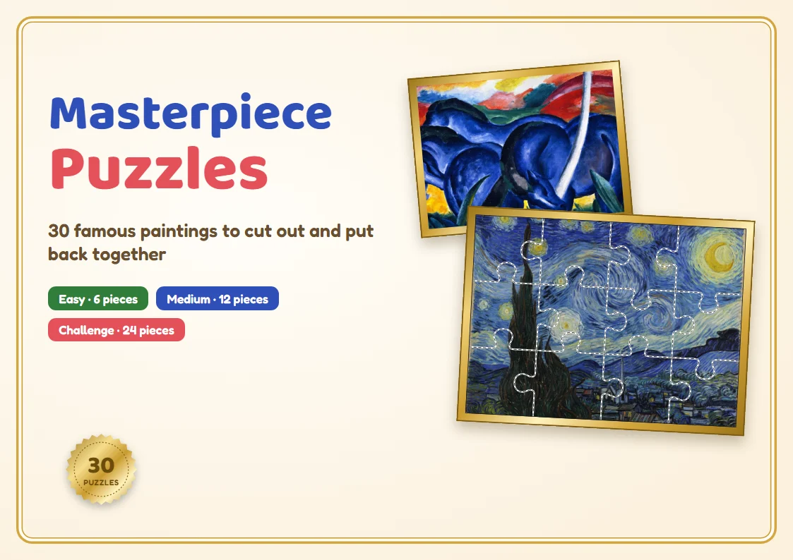

Masterpiece Puzzles
30 famous paintings to cut out and put back together.

⬇ Download the PDF
Open it in the browser →
Next step: read “How to play” (page 2) and print Puzzle 1 in color, landscape, “fit to page”. Thick paper or card works best. You can print the puzzles as many times as you like.